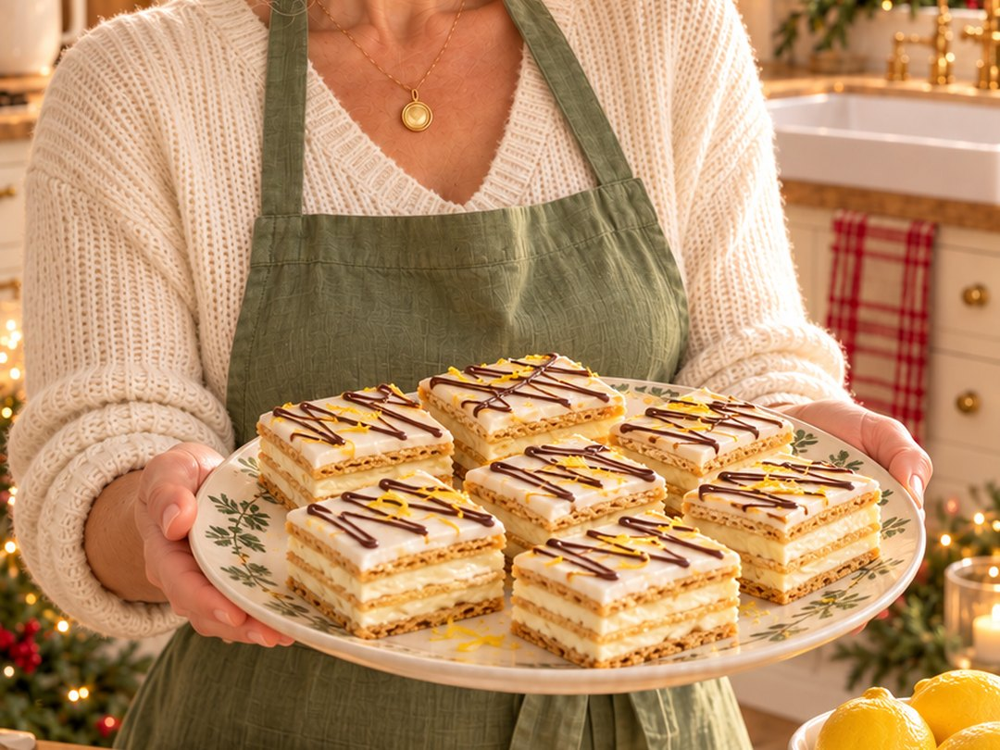

No-bake · 8 × 8 pan · make the day before
No-Bake Quick Lemon Squares
Darling, these look like you fussed for hours. You didn't even turn on the oven. Creamy lemon filling layered with graham crackers, finished with a lemon glaze and a light chocolate drizzle. Very elegant. Very easy. Almost lazy.

Ingredients
Squares
- 36 whole graham crackers, divided into four layers of nine
- 1 can sweetened condensed milk
- ⅔ cup freshly squeezed lemon juice
Lemon glaze
- 1 cup icing sugar
- About 2 tablespoons freshly squeezed lemon juice
- 1 tablespoon milk, as needed to adjust consistency
Chocolate drizzle
- Chocolate chips, melted, enough for a light drizzle
Instructions
- Prepare the pan: lightly dampen the bottom of an 8 × 8-inch pan with water to hold the lining in place. Line with parchment or wax paper, leaving an overhang for lifting out the squares.
- Mix the filling: stir the sweetened condensed milk and ⅔ cup lemon juice together in a small bowl until thick and smooth. Watch it thicken all by itself, like magic. This makes about 1⅔ cups (400 mL) of filling.
- Make the layers: arrange nine graham crackers snugly across the bottom of the pan. Spread a generous ½ cup of filling evenly over them. Repeat twice, then finish with the remaining nine crackers. You should have four cracker layers and three filling layers.
- Add the lemon glaze: place the icing sugar in a small bowl. Slowly stir in the lemon juice until smooth and barely pourable. Add milk a little at a time, as needed, to adjust the consistency. Carefully spread over the top cracker layer.
- Drizzle with chocolate: melt the chocolate chips and let them cool slightly. Spoon into a small food-safe resealable bag and press out the extra air. Snip a tiny piece off one corner and pipe a light zigzag over the glaze. Wobbly lines count as rustic.
- Refrigerate: cover and chill for at least 10 hours or overnight so the crackers soften and the layers set.
- Cut and serve: lift out using the paper overhang. Cut into a 6 × 6 grid to make 36 small squares. Keep refrigerated until serving.
🌿 Sage's Tip
You do the layering; the fridge does the work! And use fresh lemons, please. The bottled stuff knows what it did.
Because these need a night in the fridge, make them the day before you need them. That makes them a lovely stress-free choice for Christmas parties, cookie trays and holiday dinners.